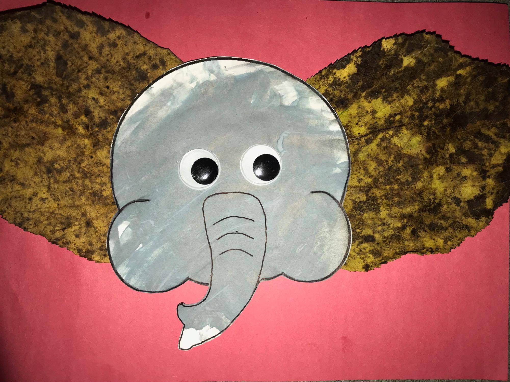
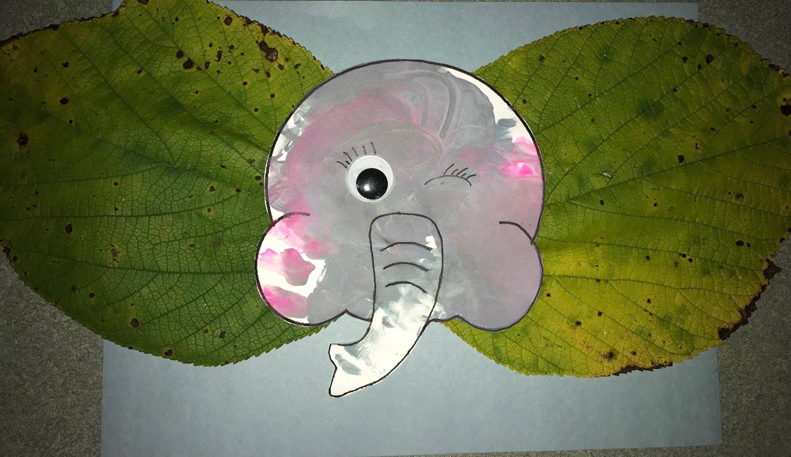

How to Make The Elephant:
I’m taking full advantage of all the leaves that are falling. They make for great activities and
cheap ones at that. I was out in the yard , picking up leaves of course, cause I’m that crazy lady
always looking for craft ideas 🤷🏻♀️. Well lucky me, I found some awesome giant leaves! Yes I was
very excited, don’t judge. Then, the worlds greatest idea popped into my head! WE’RE TOTALLY MAKING
ELEPHANTS!!!!!! 😆 So we get inside and I’m searching the internet for the perfect elephant
head... can’t find one. Decided to use my lovely creative skills and get on “paint” and make one
myself. So once again do not judge my elephant, I worked hard on it and I think it’s cute. Let’s
get started!
You will need:
- A printer (for my elephant picture)
- Black and white paint (gray)
- Big Googly eyes 👀
- Colored construction paper
- Low temp glue gun
- Scissors
- Giant leaves! 🍁
- Black Sharpie pen
First things first, print my beautiful creation out here. If you
don’t have gray paint then mix black with white (use more white then black). I threw in some pink
because that’s what one of my kids really wanted. ( she attempted to use it as blush) You can use a
plastic plate for the paint. Depending on age, either help them paint it or stay near. Let it sit
until it’s dry, then use the sharpie to trace the lines, as the gray paint tends to fade them.
Once you've finished, you can cut it out and finally put the eye balls on it. Starting to look more
like an elephant now?
Grab your construction paper and figure out how you’d like to place the
leaves (ears) on it. Let me add, don’t forget to cut the stems off the leaves. When you decide, get
the glue gun and glue them suckers on there! Finally you can add the head! Use the hot glue gun for
the head as well, it sticks much better!
I hope you enjoyed this project as much as I did... I mean the kids. 😳 if you want to use all
the same things I did for the project Click Here, don’t forget
to Like, share, and comment
what you think ❤️


{kind=link}